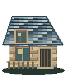
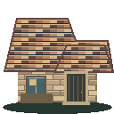
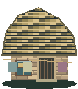

1 / limestoneCentral Plaza
Rift Crystal monument · octagonal fountain · concentric stone medallion
The Ninefold Accord
Nine carved stones surround the crystal. Each bears a different craft mark: the city was rebuilt by its people, not by kings.
2 / charcoalEmberforge District
copper chimney forge · quench vats and anvils · slag carts and hot ingots
The first anvil
The oldest anvil is cracked through its maker’s mark. The smith kept it beside the new forge: a reminder that a failed blade can still teach its maker.
3 / sandstoneWanderer’s Market
six individual awnings · wearable display stands · baskets and delivery crates
A roadward promise
The awnings are stitched from the first caravans’ cloaks. A traveler may arrive with nothing; every stall keeps one useful piece within reach.
4 / mossSanctuary Grove
stream and timber crossings · campfire shelter · moonflower understory
The shelter tree
A ribbon on the shelter beam reads: Leave a little wood for the next fire. The grove has sheltered a hundred journeys and asks no names.
5 / slateAdventurer’s Guild
blue slate guildhall · guardian banners · maps and expedition packs
Names beyond the gate
Some names on the expedition ledger have no return date. Beside each, a guild scribe has left a blank line rather than a final word.
6 / gardenMoonbloom Garden
glasshouse with living vines · moonbloom beds · bubbling alchemy cauldron
Moonbloom notes
The gardener’s notes say the flowers turn toward riftlight rather than sunlight. One pressed petal marks the page titled: Medicines for the long road.
7 / runeRift Gate Sanctuary
floating stone portal · levitating rune shards · guardian seal plinths
The broken watch
The watch stones face outward. They were built to welcome returning travelers, not to keep them inside. Four unlit seals await the world guardians.
8 / sandVanguard Training Grounds
roped practice ring · weapon racks and archery butts · straw repairs and spectator benches
The empty ring
The chalk line is renewed every dawn. This ring is reserved for future duels; today the Vanguard trains against straw, never against another traveler.
9 / clayHearthside Quarter



three distinct rooflines · laundry across narrow lanes · courier letters and shared well
The courier’s letter
A letter waits under a blue stone: I reached the city safely. The forge is loud, the garden is quiet, and there is a light in every window. I think I will stay.
Public stations connect to real blacksmith, crafting, wardrobe, merchant, sanctuary, journal, training, inventory and travel systems. Private residences and compound annex doors are scenery. Lore plaques and beacon crystals are explicit interactions.